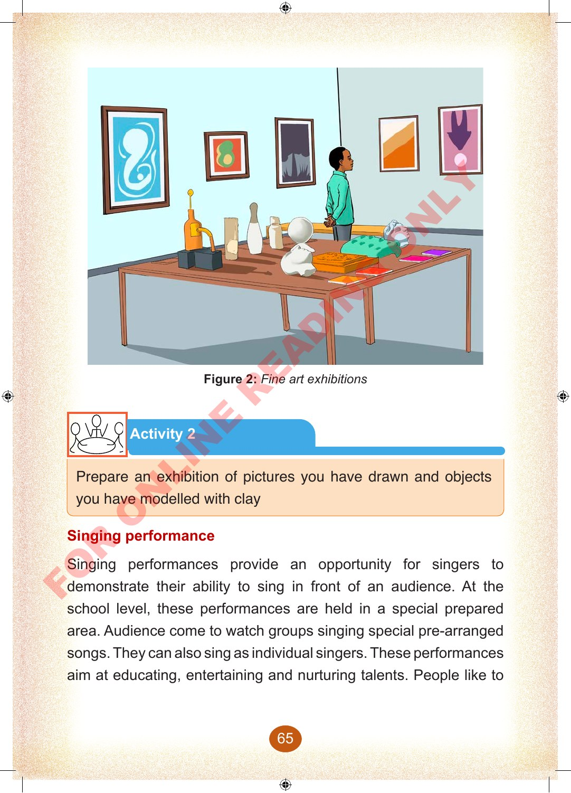

Figure 2: Fine art exhibitions
Activity 2
Prepare an exhibition of pictures you have drawn and objects you have modelled with clay
Singing performance
Singing performances provide an opportunity for singers to demonstrate their ability to sing in front of an audience.
At the school level, these performances are held in a special prepared area.
Audience come to watch groups singing special pre-arranged songs.
They can also sing as individual singers.
These performances aim at educating, entertaining and nurturing talents.
People like to